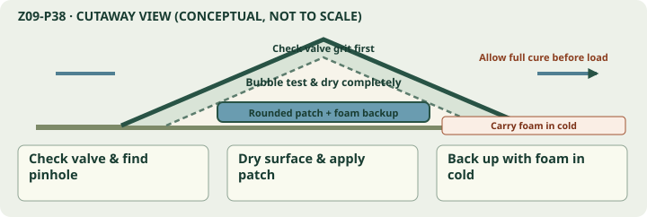

Z09-P38 · Tools and construction · New manuscript
Repair leaky sleeping pads and dry-bag pinholes cleanly
Locate slow leaks in inflatable ground pads and waterproof bags to preserve overnight insulation and dry gear.
When it applies · Field troubleshooting of punctured inflatable sleeping pads, dry sacks or waterproof liners.
Equipment · Manufacturer patch kit (peel-and-stick or seam-grip patches), clean cloth and dry warm prep area.

Actions
- Inflate the pad firmly, check the valve seal first for grit or loose threads, then listen closely or wipe a thin film of clean water/soap suds across seams and fabric to spot tiny bubbles at pinholes—dry thoroughly before patching.[K07, E20, ED]
- Mark the pinhole, clean and dry the surface completely, apply the manufacturer-compatible rounded patch with firm even pressure and allow full cure time before leaning body weight on it.[K07, E20, ED]
- Keep a thin closed-cell foam pad or dry spare clothing plan ready in cold weather so a slow overnight leak never leaves the sleeper lying directly on frozen ground.[E05, E20, K07]
Failure recognition · Trying to stick a cold patch onto a wet soapy sleeping pad at midnight without cleaning valve grit first.[K07, E20, E05]
Verify · Re-inflate after curing and press gently for several minutes to confirm the pad holds firm pressure without hissing.[K07, E20, ED]
Stop or change course · If a baffle ruptures internally or a seam splits beyond patch width in freezing temperatures, rely on closed-cell foam/dry natural insulation below and shorten the trip.[E05, E06, K07]
Evidence and editorial notes
- E05 · NWS · What To Do If You're Caught in a Winter Storm (current web edition)
- Section: Outside and find shelter · Conditions: Cold, wet or windy winter conditions
Support: Block wind, stay dry and keep off cold ground. Keep exposure reduction separate from making a fire.
Limitations: Improvised windbreaks do not provide rated thermal protection or snow-load capacity. · Conflicting evidence: None; aligns with CDC-H.
Editorial note: Separates wind, ground, and moisture heat-loss pathways. · Specialist reviewer: Cold-weather shelter specialist
Primary source · checked 2026-11-24 - E06 · CDC · Preventing Hypothermia (current web edition)
- Section: Recognizing and treating hypothermia · Conditions: Cold wet exposure; signs such as confusion, slurred speech, fumbling or drowsiness
Support: Suspected hypothermia warrants prompt help and protection from further cooling. It can occur above freezing if wet or chilled.
Limitations: Early mild shivering can mask rapidly worsening judgment impairment. · Conflicting evidence: None; aligns with ARC and WMS guidance.
Editorial note: Anchors exposure-to-medical escalation thresholds. · Specialist reviewer: Wilderness medicine
Primary source · checked 2026-11-24 - E20 · NPS · Camping: What to Bring (current web edition)
- Section: Camping: What to Bring > Shelter and Sleep System · Conditions: Overnight camping across three-season and cool conditions
Support: Match tent/tarp, groundsheet, sleeping pad, and sleeping bag ratings to expected night lows and precipitation; test pitching and inspect poles, zippers, and stakes before departure.
Limitations: Manufacturer comfort ratings assume dry insulation, ground pad use, and adequate caloric intake. · Conflicting evidence: None; reinforces pre-trip inspection and dry-sleep separation.
Editorial note: Anchors manufactured shelter selection, groundsheet fit, and gear readiness. · Specialist reviewer: Shelter equipment and field education
Primary source · checked 2026-11-24 - K07 · NPS · Ten Essentials (current web edition)
- Section: Repair Kit and Tools · Conditions: Field equipment repair during backcountry travel
Support: Carry a route-appropriate repair kit (duct/gear tape, multi-tool, cordage, patch supplies) matched to shelter, pack, stove and water gear; verify compatibility before departure.
Limitations: Field patches restore temporary function and do not restore full original storm or load ratings. · Conflicting evidence: None; aligns with E02 and E20.
Editorial note: Grounds field-repair kits, temporary patches and equipment failure limits. · Specialist reviewer: Field equipment safety
Primary source · checked 2026-11-24
Source lineage · NPS camping gear and cold-weather shelter; new manuscript · Classification · New manuscript.